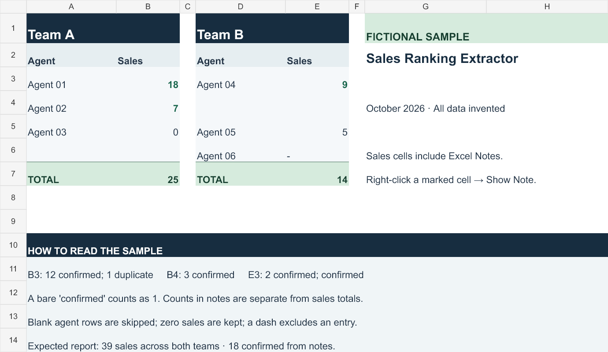

Pick the right snapshot
Workbooks with several worksheets require an explicit sheet name, so the extractor cannot quietly choose an older month. Campaign names are discovered from the sheet rather than hardcoded.
PYTHON · SPREADSHEET AUTOMATION
From a changing spreadsheet to a report a team can use.
I built this tool to report the current sales achieved from a ranking sheet that was updated periodically. My campaign team leader used the output directly to support logistics and management. It brings sales figures and the extra information tucked into cell comments into one readable text report.
A PRACTICAL REPORTING PROBLEM
A sales cell holds a total, but its comment can contain an additional count. The report needs both: sales totals from the visible cells and status counts extracted from the notes.
Read each campaign’s agent and sales columns.
Parse counts such as “12 confirmed” from sales-cell comments.
Combine overall totals, team totals, agents, and notes in a .txt file.
The original workflow grew out of spreadsheet reporting and later became a Windows executable: place the ranking workbook beside the program and receive a text report in the same folder. The public edition shares the Python implementation with a simple command to reproduce the output.
FICTIONAL DATA · REAL EXTRACTION
This is the data in the downloadable sample workbook. Expand a marked cell’s note to see the text that Python reads and the count it extracts. “Confirmed” is a neutral label used for this demonstration.
| Campaign | Agent | Sales | Sales-cell note |
|---|---|---|---|
| Team A | Agent 01 | 18 | View B3 note
Extracted: 12 confirmed |
| Team A | Agent 02 | 7 | View B4 note
Extracted: 3 confirmed |
| Team A | Agent 03 | 0 | No note → 0 |
| Team B | Agent 04 | 9 | View E3 note
Extracted: 3 confirmed |
| Team B | Agent 05 | 5 | No note → 0 |
| Team B | Agent 06 | — | Skipped: dash in workbook |
| Included totals | 39 | 18 confirmed from notes | |
Sales: 18 + 7 + 0 + 9 + 5 = 39.
Confirmed: 12 + 3 + (2 + 1) = 18. A bare “confirmed” counts as one. Missing notes contribute zero; other note labels are preserved without contributing to this count.
The workbook uses traditional XLSX comments, called Notes in current Excel. Right-click B3, B4, or E3 and choose Show/Hide Note. Threaded comment conversations are not supported. This page displays the sample data; Python runs locally when you download the project.

THE GENERATED OUTPUT
This is the actual output generated by the published Python code from the fictional workbook above. It keeps the overall picture at the top and the agent details underneath.
SALES RANKING REPORT Sheet: October 2026 Total sales: 39 Total confirmed: 18 Team A | Sales: 25 | Confirmed: 15 Agent 01: 18 (12 confirmed; 1 duplicate) Agent 02: 7 (3 confirmed) Agent 03: 0 (No notes) Team B | Sales: 14 | Confirmed: 3 Agent 04: 9 (2 confirmed; confirmed) Agent 05: 5 (No notes)
MAKING THE TOOL RELIABLE
Workbooks with several worksheets require an explicit sheet name, so the extractor cannot quietly choose an older month. Campaign names are discovered from the sheet rather than hardcoded.
The comment parser keeps every digit, supports repeated entries, and treats a missing comment as zero. Unsupported “confirmed” expressions produce an error instead of a guessed count.
Blank agent rows do not end extraction. Zero sales stay in the report; a dash skips an entry. Invalid sales and duplicate entries produce clear errors with useful context.
The workbook is loaded once and closed after reading. Input is validated before a new report replaces the previous file. Regression tests cover these cases and reproduce the committed sample report.
TRY THE PUBLIC EDITION
Download and extract the repository, then open a terminal in its folder. You’ll need Python 3.10 or newer and the one library listed in the requirements file.
The result appears in samples/my-report.txt. If you omit the output option, ranking-report.txt is created beside the workbook. The repository README explains the expected column layout, campaign selection, and note syntax.
CODE & FICTIONAL EXAMPLES
The public edition uses fictional data throughout. Original workplace spreadsheets, reports, campaign names, internal labels, and the old executable are excluded.